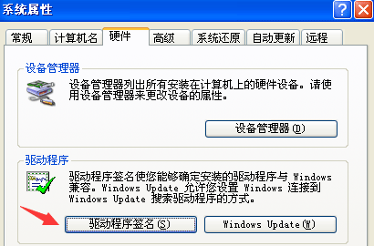
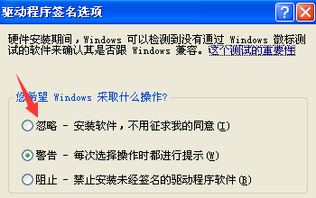
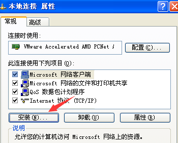
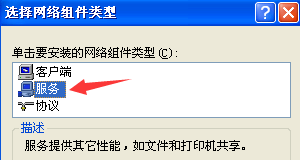
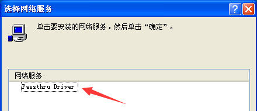
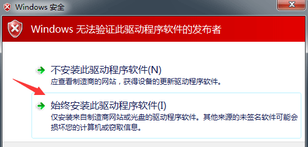
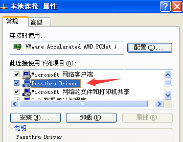
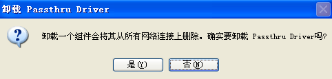

前言
NDIS驱动使用 inf 文件进行安装和卸载，共分为 手动处理 和 程序处理 两种方法。
这篇先说明 手动处理 的方法，下一篇再说明 程序处理 的方法。
手动安装
在XP系统下安装 NDIS5 的驱动时，一共需要 netsf.inf netsf_m.inf passthru.sys
3个文件，我们这里直接把这3个文件放到 D:\ 目录下，以方便寻找文件位置。
首先是关闭XP中 硬件签名认证 警告，在我的电脑上右键选择 属性，切换到 硬件 选项卡中

点击 驱动程序签名 按钮，选择 忽略 选项并确定，安装完后要记得恢复到 警告 项

然后是打开 网络连接 从 本地连接 上右键选择 属性，如下所示点击 安装 按钮

在选择 网络组件类型 窗口中，选择 服务 项并点击确定

接下来点击 从磁盘安装 按钮，从新窗口中的 厂商文件复制来源 栏里输入 D:\ 路径，
最后点击 确定 后，出现如下 选择网络服务 窗口，选中对应驱动，点击 确定 开始安装

以上为在XP中安装 NDIS5 的方法，而在WIN7中安装 NDIS6 与该流程基本相同，
只不过 NDIS6 只需要 netlwf.inf ndislwf.sys 2个文件，同时WIN7中无法关闭硬件签名认证 警告，如果出现如下警告时，直接选择 始终安装此驱动程序软件。

手动卸载
卸载的方法是，在 本地连接属性 界面选择对应的服务组件名，点击 卸载 按钮

在弹出的提示窗口中，选择 是 就会卸载NDIS驱动

注意：我们可以通过修改 inf 文件设置的 Characteristics 属性，来实现安装完毕后，
从 本地连接属性 界面无法看到该组件，即配置了 NCF_HIDDEN 项，这种情况就只能用代码卸载了。
| 十六进制值 | 名称 | 描述 |
|---|---|---|
| 0x1 | NCF_VIRTUAL | 组件是个虚拟适配器 |
| 0x2 | NCF_SOFTWARE_ENUMERATED | 组件是一个软件模拟的适配器 |
| 0x4 | NCF_PHYSICAL | 组件是一个物理适配器 |
| 0x8 | NCF_HIDDEN | 组件不显示用户接口 |
| 0x10 | NCF_NO_SERVICE | 组件没有相关的服务 |
| 0x20 | NCF_NOT_USER_REMOVABLE | 组件不能被用户删除 |
| 0x40 | NCF_MULTIPORT_INSTANCED_ADAPTER | 组件有多个端口，每个都作为单独的设备安装 |
| 0x80 | NCF_HAS_UI | 组件支持用户接口 |
| 0x400 | NCF_FILTER | 组件是一个过滤器 |
| 0x4000 | NCF_NDIS_PROTOCOL | 组件需要由绑定引擎提供卸载事件 |
| 0x40000 | NCF_LW_FILTER | 组件是一个轻型过滤器 |